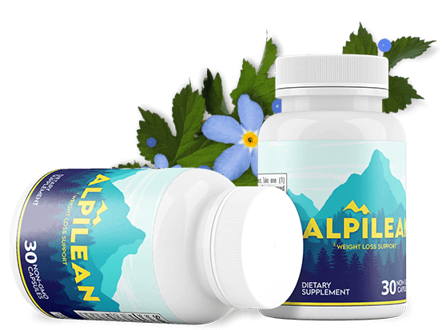

Alpilean™ Only $39/Bottle - Limited Time
2 FREE Bonuses + 60-Days Money Back Guarantee
- Supports Healthy Weight loss.
- Help improve digestion and regularity.
- Elevates bone and muscle strengths.
- 100% herbal ingredients and side-effects free.
- Elevates bone and muscle strengths.
- Regulates healthy blood sugar levels.
- Trusted by millions of customers
Regular Price: $ /per bottle
Only for: $39/per bottle

60-DAYS 100% MONEY-BACK GUARANTEE
Alpilean will be available for you to test out for two months. You can apply for our FULL
refund if you are
among the 0.5% who are not satisfied.
Consider this a trial run in case things don’t go your way. Alpilean may work. If it doesn’t, you can ask
for your money back.
Why Choose Alpilean Formula?

Made In USA
Our Alpilean dietary supplement is proudly made in the United States of America.

100% Natural
We are proud to offer Alpilean, made with all-natural, non-GMO and gluten-free ingredients.
FDA Approved
Alpilean is formulated in a facility registered with FDA & follows all FDA regulations.
GMP Certified
This product has been certified under Good Manufacturing Practice standards.
Alpilean Proven By Thousands
What is Alpilean?
Alpilean is a dietary supplement that helps promote weight loss in the human body with its powerful
formulation. This weight loss supplement has been uniquely formulated with the help of natural ingredients
that are non-GMO in a state-of-the-art facility adhering to all the safety guidelines.
Using a blend of African mango extract, ginger, citrus bioflavonoids, turmeric, moringa and a rare type of
golden algae extract, Alpilean can purportedly help you lose a significant amount of weight without major
changes to your diet or exercise habits.
There are many weight loss programs out there, but what makes Alpilean Weight Loss unique? This program is
designed to help you burn fat, not muscle, and to promote a healthy lifestyle. The program is based on the
premise that if you eat fewer calories than you burn, you will lose weight. There are no gimmicks or quick
fixes – just a simple, effective plan that can help you reach your weight loss goals.
Alpilean Supplement Benefits

- Alpilean is a weight loss supplement that helps in the regulation of inner body temperature to promote
fat loss.
- The formula of Alpilean is based on science and research
- Targets the core temperature of your body to impact the weight loss naturally
- Boosts the metbsaolsim of your body that aids in accelerating the fat burning process for weight loss
- Target inner core body temperature to accelerate fat burning
- Controls and suppresses the appetite levels and unwanted hunger pangs
- Made out of 100% natural and healthy extracts and substances that won’t cause any adverse
effects
- Ease digestion and bloating
- Heightens the fat burning process in body by increases the inner body temperature
- Support healthy cholesterol, oxidative stress, and more
- Alpilean offers many exciting bonus eBooks and supplements that boost your weight loss journey.
- Produced in an FDA-approved and GMP-certified facility.
- The capsule form of this product is easy to swallow and absorbs quickly in your system.
Alpilean Supplement Benefits
- Alpilean is a dietary supplement that works towards promoting weight loss in individuals
suffering from overweight issues. It is one such supplement that helps in achieving your weight loss
goals with its working and unique formulation.
- The working of Alpilean is based on a few mechanisms and processes that help you lose weight through
natural means effectively.
- Consuming the Alpilean diet pills activates the process of thermogenesis in the human body.
Thermogenesis is a process that produces heat in the body of most warm-blooded animals.
- Alpilean aims to normalize your inner body temperature, giving you the same advantage as people with
high levels of muscle mass. Although the makers of Alpilean don’t specifically claim to raise core body
temperature, they claim to return your body temperature to normal levels. That could mean heating your
low internal body temperature to accelerate fat-burning results.
- Many people don’t realize it, but internal body temperature has nothing to do with how hot or cold your
skin feels- it is the temperature of your internal organs/cells. Research from Switzerland has proven
how inner body temperature is involved in the way that your body metabolizes fat.
- If you have a normal internal body temperature, you can quickly and effortlessly burn calories. However,
the lower your body temperature, the slower your metabolism. In fact, according to research, metabolism
slows by at least 13% with every drop in temperature.
- These new findings related to internal body temperature and weight loss is the primary reason that
Alpilean Weight Loss Support was created.
60-DAYS 100% MONEY-BACK GUARANTEE
Alpilean will be available for you to test out for two months. You can apply for our FULL
refund if you are
among the 0.5% who are not satisfied.
Consider this a trial run in case things don’t go your way. Alpilean may work. If it doesn’t, you can ask
for your money back.
Alpilean Ingredients (100% Natural)
Ingredients are the heart of any product. If the ingredients are effective and mixed in definite proportions,
then they will surely enhance the product’s efficacy. The ingredients used in the production of Alpilean are
completely natural and are effective in reducing weight.
Drumstick Tree Leaf:
It is the organic substance that is widely used as anti-inflammatory remedy that controls
the inflammation across the body and prevents you from experiencing swelling and inflammation. Besides, the
formula also increases the core temperature of your body that aids in burning off the fat cells quickly. It
boosts metabolism that further aids you to lose healthy and faster weight.
Dika Nut:
African Mango Seed is a light brown or almost white seed that is used in traditional
African medicine. It has been traditionally used to treat conditions such as fatigue, poor digestion, and
anemia. It is an excellent source of vitamin A, which helps to maintain healthy skin and eyes.As per the
Alpilean makers, African mango seed can target inner temperature, ease digestion and bloating, and support
healthy cholesterol levels.
Further, it also contains high levels of antioxidants that help to fight off harmful free radicals in the
body. Additionally, African Mango Seed is a good source of minerals such as magnesium, potassium, and zinc.
These nutrients are important for overall health and can support nerve function, muscle contraction, joint
movement, and more.
Golden Algae:
Alpilean contains fucoxanthin, a popular weight loss compound found in many diet pills
sold online today. The fucoxanthin in Alpilean comes from a specific type of algae called golden algae.
While other diet pills use brown seaweed extract to accelerate weight loss, Alpilean uses fucoxanthin from
golden algae. According to the manufacturer, this golden algae will target inner temperature, support liver,
and brain health, and support bone strength, among other benefits.
Ginger Rhizome:
It is a plant of the genus Zingiber and of the family Zingiberaceae, whose rhizome is
used worldwide for cooking and in traditional medicine. It is very effective for losing weight.The bioactive
compound in ginger, known as gingerol, is responsible for much of ginger’s medicinal properties. Gingerol
has anti-inflammatory and antioxidant effects, which help fight the body’s free radicals.
It is also responsible for reducing oxidative stress in the body. Oxidative stress is a phenomenon caused by
an imbalance between the production and accumulation of reactive oxygen species. An increase in oxidative
stress can increase the number of free radicals in your body.
Vitamin B12
Vitamin B12 is a water-soluble vitamin that is naturally present in some foods like beef,
liver, clams, and other dairy products. Vitamin B12 is very important in improving nerve function, cell
metabolism, and the production of DNA. Vitamin B12 plays a key role in increasing fat metabolism. An
increase in fat metabolism means your body will burn fat faster and help you in losing weight. A high blood
level of vitamin B12 is directly linked to a low level of obesity.
Vitamin B12 also helps to increase your heart health. A deficiency of vitamin B12 leads to poor heart health
and can cause several other diseases.
Vitamin B12 deficiency can result in megaloblastic anemia, where the number of red blood cells is lower than
usual numbers. It can also lead to a lack of energy and contribute to fatigue.
Bigarade Orange:
Citrus Bioflavonoids are a type of flavonoid that is found in many citrus fruits. They
are said to have weight loss benefits due to their ability to reduce fat storage and improve your body’s
insulin sensitivity. Additionally, Citrus Bioflavonoids can help suppress the appetite and increase energy
levels.Citrus Bioflavonoids are also believed to improve blood sugar levels, immune function, and
cholesterol levels, making them an ideal choice for people with diabetes or high cholesterol levels.
How Much Weight Can You Lose with Alpilean?
Alpilean is backed by hundreds of five-star reviews online. In fact, the manufacturer claims over
200,000+
people use the same alpine method daily to detoxify their body, target inner body temperature, and lose
weight.
Here are some of the weight loss testimonials shared by verified purchasers on the official Alpilean
website:
One man claims he tried dieting, exercising, and taking supplements to lose weight, but nothing seemed to
work. Then, he started taking Alpilean and experienced near-immediate results. He claims to have lost 28lbs
without changing his diet. Alpilean has even stopped him from snoring.
Lillian Davis: “I’ve gone down four dress sizes. Four. I had no hesitation in trying it at all. It seriously
completely changed my life and saved me a fortune in medical expenses. I now wake up happy, I have bundles
of energy, best thing I’ve ever done for myself.”
Vivian Sun: “I’m down 31 pounds. In the morning my pajamas were so loose I had to hold them up to run to the
bathroom. It all happened so fast for me, and I was slim before I even knew it, and then as time went on,
the more weight I started to lose.”
Another reviewer claims to have lost 33lbs with Alpilean, describing the supplement as “like a magic trick.”
She has lost 3 dress sizes with the supplement and is proud of her “sexy new body.”
One woman claims she has lost 34lbs thanks to Alpilean and now easily fits into the jeans she wore 15 years
ago. Now, her daughter “is proud to call me her mom,” reports the verified purchaser.
Another woman, Cassie, claims to have dissolved 40lbs “in no time” while taking Alpilean. Cassie lost 4
dress sizes in a short period – and she continues to lose weight.
Overall, the makers of Alpilean claim to have developed the formula based on a “tropical loophole” that
“dissolves fat overnight.” By taking Alpilean daily, you can purportedly lose a significant amount of weight
in a short period of time.
Limited Time Special Pricing - Act Now!
Secure Your Reserved Aliplean While Stocks Last
60-DAYS 100% MONEY-BACK GUARANTEE
Alpilean will be available for you to test out for two months. You can apply for our FULL
refund if you are
among the 0.5% who are not satisfied.
Consider this a trial run in case things don’t go your way. Alpilean may work. If it doesn’t, you can ask
for your money back.